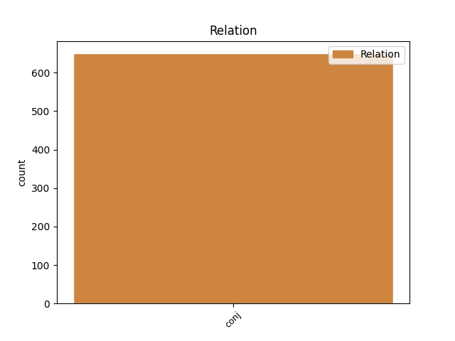
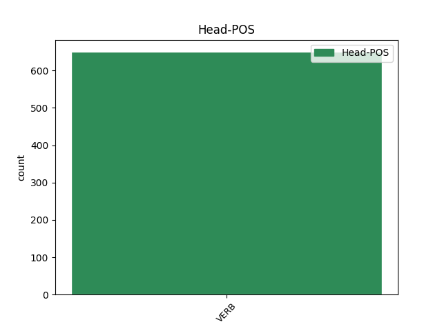
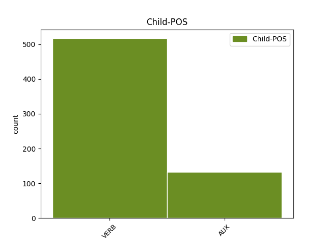

Distribution of features within this leaf



Agreement Rules sorted by frequency.
- When the dependent token is the conjunct(conj) of the head token, and the head token is AUX
1 Lo _ _ _ _ 0 _ _ _
2 stesso _ _ _ _ 0 _ _ _
3 avevano _ _ _ _ 0 _ _ _
4 fatto _ _ _ _ 0 _ _ _
5 le _ _ _ _ 0 _ _ _
6 compagnie _ _ _ _ 0 _ _ _
7 petrolifere _ _ _ _ 0 _ _ _
8 : _ _ _ _ 0 _ _ _
9 " _ _ _ _ 0 _ _ _
10 poi _ _ _ _ 0 _ _ _
11 è essere AUX VA Mood=Ind|Number=Sing|Person=3|Tense=Pres|VerbForm=Fin 0 _ _ _
12 bastato _ _ _ _ 0 _ _ _
13 dir _ _ _ _ 0 _ _ _
14 glie _ _ _ _ 0 _ _ _
15 lo _ _ _ _ 0 _ _ _
16 e _ _ _ _ 0 _ _ _
17 allora _ _ _ _ 0 _ _ _
18 il _ _ _ _ 0 _ _ _
19 prezzo _ _ _ _ 0 _ _ _
20 di _ _ _ _ 0 _ _ _
21 la _ _ _ _ 0 _ _ _
22 benzina _ _ _ _ 0 _ _ _
23 è essere AUX VA Mood=Ind|Number=Sing|Person=3|Tense=Pres|VerbForm=Fin 11 conj _ _
24 calato _ _ _ _ 0 _ _ _
25 di _ _ _ _ 0 _ _ _
26 30 _ _ _ _ 0 _ _ _
27 lire _ _ _ _ 0 _ _ _
28 " _ _ _ _ 0 _ _ _
29 . _ _ _ _ 0 _ _ _
Disagree Examples:
1 Su _ _ _ _ 0 _ _ _
2 il _ _ _ _ 0 _ _ _
3 piano _ _ _ _ 0 _ _ _
4 macroeconomico _ _ _ _ 0 _ _ _
5 , _ _ _ _ 0 _ _ _
6 dunque _ _ _ _ 0 _ _ _
7 , _ _ _ _ 0 _ _ _
8 le _ _ _ _ 0 _ _ _
9 infrastrutture _ _ _ _ 0 _ _ _
10 si _ _ _ _ 0 _ _ _
11 delineano _ _ _ _ 0 _ _ _
12 come _ _ _ _ 0 _ _ _
13 un _ _ _ _ 0 _ _ _
14 vantaggio _ _ _ _ 0 _ _ _
15 competitivo _ _ _ _ 0 _ _ _
16 offerto _ _ _ _ 0 _ _ _
17 da _ _ _ _ 0 _ _ _
18 una _ _ _ _ 0 _ _ _
19 città _ _ _ _ 0 _ _ _
20 rispetto _ _ _ _ 0 _ _ _
21 ad _ _ _ _ 0 _ _ _
22 altre _ _ _ _ 0 _ _ _
23 , _ _ _ _ 0 _ _ _
24 non _ _ _ _ 0 _ _ _
25 solo _ _ _ _ 0 _ _ _
26 in _ _ _ _ 0 _ _ _
27 stretti _ _ _ _ 0 _ _ _
28 termini _ _ _ _ 0 _ _ _
29 di _ _ _ _ 0 _ _ _
30 economie _ _ _ _ 0 _ _ _
31 esterne _ _ _ _ 0 _ _ _
32 fruibili _ _ _ _ 0 _ _ _
33 da _ _ _ _ 0 _ _ _
34 le _ _ _ _ 0 _ _ _
35 attività _ _ _ _ 0 _ _ _
36 produttive _ _ _ _ 0 _ _ _
37 , _ _ _ _ 0 _ _ _
38 ma _ _ _ _ 0 _ _ _
39 anche _ _ _ _ 0 _ _ _
40 in _ _ _ _ 0 _ _ _
41 termini _ _ _ _ 0 _ _ _
42 di _ _ _ _ 0 _ _ _
43 determinanti _ _ _ _ 0 _ _ _
44 di _ _ _ _ 0 _ _ _
45 l' _ _ _ _ 0 _ _ _
46 ambiente _ _ _ _ 0 _ _ _
47 socio _ _ _ _ 0 _ _ _
48 economico _ _ _ _ 0 _ _ _
49 in _ _ _ _ 0 _ _ _
50 cui _ _ _ _ 0 _ _ _
51 sono essere AUX VA Mood=Ind|Number=Sing|Person=1|Tense=Pres|VerbForm=Fin 0 _ _ _
52 inserite _ _ _ _ 0 _ _ _
53 e _ _ _ _ 0 _ _ _
54 operano operare VERB V Mood=Ind|Number=Plur|Person=3|Tense=Pres|VerbForm=Fin 51 conj _ _
55 tali _ _ _ _ 0 _ _ _
56 attività _ _ _ _ 0 _ _ _
57 e _ _ _ _ 0 _ _ _
58 di _ _ _ _ 0 _ _ _
59 la _ _ _ _ 0 _ _ _
60 qualità _ _ _ _ 0 _ _ _
61 di _ _ _ _ 0 _ _ _
62 la _ _ _ _ 0 _ _ _
63 vita _ _ _ _ 0 _ _ _
64 che _ _ _ _ 0 _ _ _
65 le _ _ _ _ 0 _ _ _
66 diverse _ _ _ _ 0 _ _ _
67 aree _ _ _ _ 0 _ _ _
68 sono _ _ _ _ 0 _ _ _
69 in _ _ _ _ 0 _ _ _
70 grado _ _ _ _ 0 _ _ _
71 di _ _ _ _ 0 _ _ _
72 offrire _ _ _ _ 0 _ _ _
73 . _ _ _ _ 0 _ _ _
1 Le _ _ _ _ 0 _ _ _
2 trattative _ _ _ _ 0 _ _ _
3 , _ _ _ _ 0 _ _ _
4 in _ _ _ _ 0 _ _ _
5 corso _ _ _ _ 0 _ _ _
6 da _ _ _ _ 0 _ _ _
7 tempo _ _ _ _ 0 _ _ _
8 , _ _ _ _ 0 _ _ _
9 sono essere AUX VA Mood=Ind|Number=Sing|Person=1|Tense=Pres|VerbForm=Fin 0 _ _ _
10 ormai _ _ _ _ 0 _ _ _
11 terminate _ _ _ _ 0 _ _ _
12 e _ _ _ _ 0 _ _ _
13 si _ _ _ _ 0 _ _ _
14 aspetta aspettare VERB V Mood=Ind|Number=Sing|Person=3|Tense=Pres|VerbForm=Fin 9 conj _ _
15 solo _ _ _ _ 0 _ _ _
16 la _ _ _ _ 0 _ _ _
17 richiesta _ _ _ _ 0 _ _ _
18 formale _ _ _ _ 0 _ _ _
19 di _ _ _ _ 0 _ _ _
20 l' _ _ _ _ 0 _ _ _
21 Intersind _ _ _ _ 0 _ _ _
22 che _ _ _ _ 0 _ _ _
23 , _ _ _ _ 0 _ _ _
24 appunto _ _ _ _ 0 _ _ _
25 , _ _ _ _ 0 _ _ _
26 potrebbe _ _ _ _ 0 _ _ _
27 arrivare _ _ _ _ 0 _ _ _
28 anche _ _ _ _ 0 _ _ _
29 in _ _ _ _ 0 _ _ _
30 queste _ _ _ _ 0 _ _ _
31 ore _ _ _ _ 0 _ _ _
32 . _ _ _ _ 0 _ _ _
1 Pesante _ _ _ _ 0 _ _ _
2 il _ _ _ _ 0 _ _ _
3 commento _ _ _ _ 0 _ _ _
4 su _ _ _ _ 0 _ _ _
5 la _ _ _ _ 0 _ _ _
6 vicenda _ _ _ _ 0 _ _ _
7 di _ _ _ _ 0 _ _ _
8 i _ _ _ _ 0 _ _ _
9 servizi _ _ _ _ 0 _ _ _
10 segreti _ _ _ _ 0 _ _ _
11 , _ _ _ _ 0 _ _ _
12 di _ _ _ _ 0 _ _ _
13 Massimo _ _ _ _ 0 _ _ _
14 D' _ _ _ _ 0 _ _ _
15 Alema _ _ _ _ 0 _ _ _
16 , _ _ _ _ 0 _ _ _
17 numero _ _ _ _ 0 _ _ _
18 due _ _ _ _ 0 _ _ _
19 Pds _ _ _ _ 0 _ _ _
20 , _ _ _ _ 0 _ _ _
21 secondo _ _ _ _ 0 _ _ _
22 il _ _ _ _ 0 _ _ _
23 quale _ _ _ _ 0 _ _ _
24 < _ _ _ _ 0 _ _ _
25 si _ _ _ _ 0 _ _ _
26 è _ _ _ _ 0 _ _ _
27 aperta _ _ _ _ 0 _ _ _
28 una _ _ _ _ 0 _ _ _
29 lotta _ _ _ _ 0 _ _ _
30 di _ _ _ _ 0 _ _ _
31 potere _ _ _ _ 0 _ _ _
32 per _ _ _ _ 0 _ _ _
33 il _ _ _ _ 0 _ _ _
34 controllo _ _ _ _ 0 _ _ _
35 di _ _ _ _ 0 _ _ _
36 apparati _ _ _ _ 0 _ _ _
37 che _ _ _ _ 0 _ _ _
38 non _ _ _ _ 0 _ _ _
39 hanno _ _ _ _ 0 _ _ _
40 mai _ _ _ _ 0 _ _ _
41 svolto _ _ _ _ 0 _ _ _
42 esclusivamente _ _ _ _ 0 _ _ _
43 i _ _ _ _ 0 _ _ _
44 loro _ _ _ _ 0 _ _ _
45 compiti _ _ _ _ 0 _ _ _
46 d' _ _ _ _ 0 _ _ _
47 istituto _ _ _ _ 0 _ _ _
48 , _ _ _ _ 0 _ _ _
49 ma _ _ _ _ 0 _ _ _
50 hanno avere AUX VA Mood=Ind|Number=Plur|Person=3|Tense=Pres|VerbForm=Fin 0 _ _ _
51 fatto _ _ _ _ 0 _ _ _
52 anche _ _ _ _ 0 _ _ _
53 un _ _ _ _ 0 _ _ _
54 " _ _ _ _ 0 _ _ _
55 lavoro _ _ _ _ 0 _ _ _
56 sporco _ _ _ _ 0 _ _ _
57 " _ _ _ _ 0 _ _ _
58 e _ _ _ _ 0 _ _ _
59 sono essere AUX VA Mood=Ind|Number=Sing|Person=1|Tense=Pres|VerbForm=Fin 50 conj _ _
60 stati _ _ _ _ 0 _ _ _
61 utilizzati _ _ _ _ 0 _ _ _
62 in _ _ _ _ 0 _ _ _
63 la _ _ _ _ 0 _ _ _
64 lotta _ _ _ _ 0 _ _ _
65 politica _ _ _ _ 0 _ _ _
66 > _ _ _ _ 0 _ _ _
67 . _ _ _ _ 0 _ _ _
1 Restringere _ _ _ _ 0 _ _ _
2 la _ _ _ _ 0 _ _ _
3 fascia _ _ _ _ 0 _ _ _
4 può potere AUX VM Mood=Ind|Number=Sing|Person=3|Tense=Pres|VerbForm=Fin 0 _ _ _
5 anche _ _ _ _ 0 _ _ _
6 essere _ _ _ _ 0 _ _ _
7 l' _ _ _ _ 0 _ _ _
8 obiettivo _ _ _ _ 0 _ _ _
9 finale _ _ _ _ 0 _ _ _
10 , _ _ _ _ 0 _ _ _
11 ma _ _ _ _ 0 _ _ _
12 anzitutto _ _ _ _ 0 _ _ _
13 dobbiamo dovere AUX VM Mood=Ind|Number=Plur|Person=1|Tense=Pres|VerbForm=Fin 4 conj _ _
14 verificare _ _ _ _ 0 _ _ _
15 la _ _ _ _ 0 _ _ _
16 situazione _ _ _ _ 0 _ _ _
17 . _ _ _ _ 0 _ _ _
1 Mezzo _ _ _ _ 0 _ _ _
2 milione _ _ _ _ 0 _ _ _
3 di _ _ _ _ 0 _ _ _
4 persone _ _ _ _ 0 _ _ _
5 sono essere AUX VA Mood=Ind|Number=Sing|Person=1|Tense=Pres|VerbForm=Fin 0 _ _ _
6 morte _ _ _ _ 0 _ _ _
7 e _ _ _ _ 0 _ _ _
8 l' _ _ _ _ 0 _ _ _
9 Onu _ _ _ _ 0 _ _ _
10 non _ _ _ _ 0 _ _ _
11 ha avere AUX VA Mood=Ind|Number=Sing|Person=3|Tense=Pres|VerbForm=Fin 5 conj _ _
12 mosso _ _ _ _ 0 _ _ _
13 un _ _ _ _ 0 _ _ _
14 dito _ _ _ _ 0 _ _ _
15 per _ _ _ _ 0 _ _ _
16 salvar _ _ _ _ 0 _ _ _
17 le _ _ _ _ 0 _ _ _
18 > _ _ _ _ 0 _ _ _
19 . _ _ _ _ 0 _ _ _